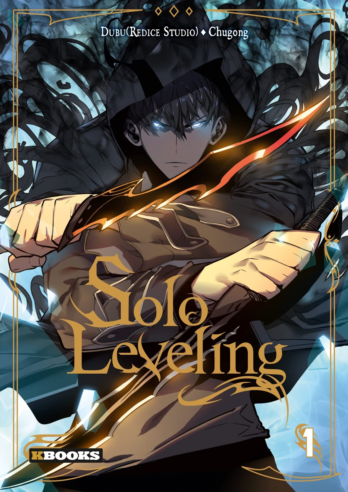

The Rebirth of an 8th-Circled Mage
Synopsis
Henry Maurice was an 8-circled archmage who was a legend- one of the founding fathers who helped his friend become the king of a unified empire. After the son took over the throne, Henry was executed with the false accusation of leading a rebellion against the empire. He then wakes up in the body of young Henry Morris, the eldest of a baronet family, who also happened to have the same name. Henry turns his life around by again relearning magic and also swordsmanship in order to become the first magic swordsman.

Solo Leveling
Synopsis
Sung Jin-Woo est le plus faible des chasseurs de rang E, autrement dit, le plus faible parmi les faibles. Il est donc surnommé par ses confrères chasseurs “le faible”. En tout cas il l’était, jusqu’à ce qu’il se retrouve piégé dans un donjon et y acquière une capacité… étrange. Il peut désormais voir une interface lui montrant des quêtes.Sung Jin Woo va-t-il réussir à devenir le plus puissant des Chasseurs tout en surmontant les épreuves et conspirations?

The beginning after the end
Synopsis
Réincarné dans un nouveau monde rempli de magie et de monstres, le roi a une seconde chance de revivre sa vie en tant qu'Arthur Leywin, premier fils d'un modeste couple d'aventuriers pratiquant la magie.Corriger les erreurs de son passé ne sera cependant pas son seul défi. Sous la paix et la prospérité du nouveau monde se cache un courant sous-jacent qui menace de détruire tout ce pour quoi il a travaillé, remettant en question son rôle et la raison de sa nouvelle naissance.
The beginning after the end
Synopsis
Réincarné dans un nouveau monde rempli de magie et de monstres, le roi a une seconde chance de revivre sa vie en tant qu'Arthur Leywin, premier fils d'un modeste couple d'aventuriers pratiquant la magie.Corriger les erreurs de son passé ne sera cependant pas son seul défi. Sous la paix et la prospérité du nouveau monde se cache un courant sous-jacent qui menace de détruire tout ce pour quoi il a travaillé, remettant en question son rôle et la raison de sa nouvelle naissance.